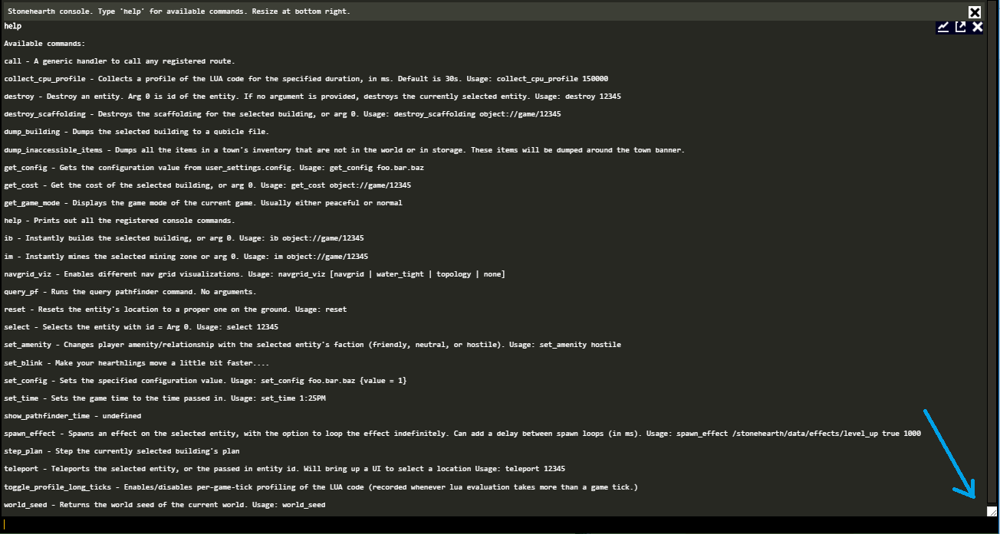
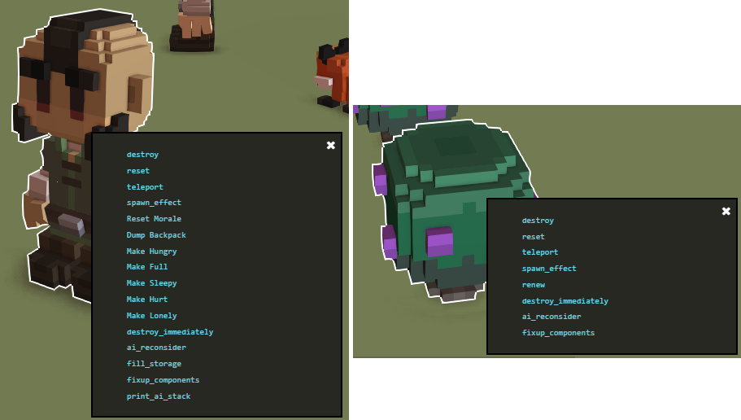

Stonehearth comes with a built-in console too, but it can only execute a handful of predefined commands. This is different from the Lua console from debugtools, which was added way later. The default console appears at the top of the screen inside the game.
Press Ctrl+C to open the console. Press Ctrl+C or Esc to close it. You can make it taller / shorter by dragging up and down the control located at the bottom right above the bar.

If we enable the debugtools mod, it will have many more advanced commands that can come very handy (for example, the promote_to command).
Type help and press Enter to get the list of available commands.
Some of these advanced commands can be executed faster by holding Shift and clicking on an entity. A small window will appear with a list of applicable commands. Click on one of them to execute it.

These are all the commands from the default console after enabling debugtools. Mind that some of them might not work anymore, or there exists a faster command to do the same than they do. Let's group them for ease of reading:
Commands for speeding up testing:
Many of these commands require us to have an entity selected before we execute them. Some of them have arguments, such as aliases / URIs or numbers.
add_citizen - Adds a new hearthling to your town. Optionally specify a job (must specify full alias for mods). Usage: add_citizen shepherd
promote_to - Instantly promotes the selected hearthling to the specified job (must specify full alias for mods, i.e. fancy_mod:jobs:fancy_chef). Usage: promote_to footman
add_exp - Adds experience points to the currently selected entity's job. If no exp amount is given, will level up to the next level. Usage: add_exp 1000
add_gold - Adds gold to the current player's inventory. It will spawn gold chests at the town's banner. A negative value will subtract gold. Usage: add_gold 1000
teleport - Teleports the selected entity, or the passed in entity id. Will bring up a flag at the cursor to select a location. Usage: teleport 12345
destroy - Destroys an entity. Arg 0 is id of the entity. If no argument is provided, destroys the currently selected entity. Usage: destroy 12345
destroy_immediately - Destroys an entity immediately. Might not run other code that normally runs when someone is killed, like drop loot, etc. Arg 0 is id of the entity. If no argument is provided, destroys the currently selected entity. Usage: destroy_immediately 12345
ib - Instantly builds the selected building, or arg 0. Usage: ib object://game/12345
im - Instantly mines the selected mining zone, or arg 0. Usage: im object://game/12345
add_buff - Adds the specified buff URI to the currently selected entity. Usage: add_buff stonehearth:buffs:starving
remove_buff - Removes the specified buff URI from the currently selected entity. Usage: remove_buff stonehearth:buffs:starving
add_trait - Adds the trait to the currently selected entity. Usage: add_trait stonehearth:traits:night_owl
remove_trait - Removes the trait from the currently selected entity. Usage: remove_trait stonehearth:traits:night_owl
fill_storage - Fills the selected storage with the specified uri. If no uri specified, defaults to oak logs. Usage: fill_storage stonehearth:resources:wood:oak_log
grow - Tells the selected entity to grow (either farm crops or animals). Ex: Make a lamb grow into a sheep. Usage: grow
decay - Makes a food decay immediately. Usage: decay
renew - Tells the selected entity to renew its resource. Ex: Make sheep grow wool again or depleeted silkweed grow. Usage: renew
reproduce - Select a pasture and force that pasture to reproduce an animal. Usage: reproduce
increase_city_tier - Increases the city tier of the settlement by 1
set - Sets the attribute on the selected entity to the specified value. Usage: set spirit 6
set_attr - Sets the attribute on the selected entity to the specified value. Usage: set_attr health 10
set_blink - Make your hearthlings move a little bit faster... (will make them skip the 'walk to this location' actions, instantly teleporting to where they think they should go)
set_health - Sets the health on the selected entity to the specified value. Usage: set_health 10
set_resource - Sets the expendable resource on the selected entity to the specified value. Usage: set_resource health 10
set_happiness - Sets the current happiness of the currently selected entity.
set_time - Sets the game time to the time passed in. Usage: set_time 1:25PM
set_amenity - Changes player amenity/relationship with the selected entity's faction (friendly, neutral, or hostile). Usage: set_amenity hostile
make_friendly - Makes the player friendly with the selected entity's faction
make_hostile - Makes the player hostile with the selected entity's faction
make_neutral - Makes the player neutral with the selected entity's faction
make_hungry - Makes the selected entity hungry if the entity has the calories attribute. The entity will try to eat if it has a calorie observer. Usage: make_hungry
make_full - Makes the selected entity full if the entity has the calories resource. If no entity selected, everyone is made full. Usage: make_full
make_sleepy - Makes the selected entity exhaustedly sleepy if the entity has the sleepiness attribute. The entity will try to sleep if it has a sleepiness observer. Usage: make_sleepy
make_hurt - Makes the selected entity have low health. Usage: make_hurt
make_lonely - Makes the selected entity have a low social satisfaction. Usage: make_lonely
add_thought - Adds the specified thought key (format is mod_namespace:thoughts:category:..) to the currently selected entity. Usage: add_thought stonehearth:thoughts:hunger:hungry
remove_thought - Removes the specified thought key (format is mod_name:thought_type:category:name) from the currently selected entity. Usage: remove_thought stonehearth:thoughts:hunger:hungry
unlock - Manually unlocks the given crop or recipe for the given job. Example usage: unlock corn stonehearth:jobs:farmer
release - releases the pet in a bait trap
get_score - Get the town's score for specified score type. Usage: get_score military_strength
change_score - Changes the specified score on the selected entity by the specified amount. Usage: change_score nutrition -10
reset_scores - Resets all the scores on the selected entity to their starting values. Usage: reset_scores
show_animation_text - Enable to display text over a hearthling's head that shows what animation they are currently playing. Need to restart / reload game to have it take effect. Usage: show_animation_text true/false
show_untranslated - Use to display untranslated strings with *** around them. Usage: show_untranslated true/false
spawn_effect - Spawns an effect on the selected entity, with the option to loop the effect indefinitely. Can add a delay between spawn loops (in ms). Usage: spawn_effect /stonehearth/data/effects/level_up true 1000
spawn_encounter - Spawns the encounter specified. WARNING: Only for testing purposes, may cause lasting issues if game is saved after using cmd. Arguments should be: campaign, encounter, arc. Usage: spawn_encounter ambient_threats create_necromancer_crypt trigger
add_conversation_subject - Adds a conversation subject with optional sentiment into the entity's social component. Usage: add_conversation_subject goblins --sentiment=1
add_journal - Force adds a journal entry for the selected hearthling. Usage: add_journal dreams
Commands for working around the bugs:
These commands can be used when encountering certain types of bugs, to help fixing the game state. As modders, we don't use these that often.
ai_reconsider - Calls reconsider on the selected entity
destroy_npc_stockpiles - Destroys stockpiles of the npc player (Arg 0). If no argument is provided, destroys stockpiles of all npcs. Usage: destroy_npc_stockpiles goblins
destroy_scaffolding - Destroy All Scaffolding
dump_backpack - Instantly drops on to the ground all items in the selected hearthling's backpack. Usage: dump_backpack
dump_inaccessible_items - Dumps all the items in a town's inventory that are not in the world or in storage. These items will be dumped around the town banner.
fixup_components - If there are any components missing on this entity, we will attempt to add them
reset - Resets the entity's location to a proper one on the ground. Usage: reset
reset_location - Resets the entity's location to a proper one on the ground. Can also pass in a new location. Usage: reset_location {optional x y z}
select - Selects the entity with id = Arg 0. Usage: select 12345
select_storage - Select's the storage that contains the entity, if it has one.
Other commands for general stuff:
dump_building - Dumps the selected building to a qubicle file.
get_game_mode - Displays the game mode of the current game. Usually either peaceful or normal
set_game_speed - Sets the game speed to the default game speed multiplied by the specified amount. Usage: set_game_speed 5
world_seed - Returns the world seed of the current world. Usage: world_seed
help - Prints out all the registered console commands.
now - Returns radiant.gamestate.now()
get_config - Gets the configuration value from user_settings.config. Usage: get_config foo.bar.baz
set_config - Sets the specified configuration value. Usage: set_config foo.bar.baz {value = 1}
get_entity_info - Return info about an entity, even if the entity has been destroyed. Pass in id of the entity. Usage: get_entity_info 82215
get_global_vision - Returns list of all objects in global vision of the caller's population
get_cost - Get the cost of the selected building, or arg 0. Usage: get_cost object://game/12345
get_conversation_actives - Gets all active conversation subjects for an entity.
get_conversation_subject - Gets a conversation subject with optional sentiment into the entity's social component. Usage: get_conversation_subject goblins
get_current_interaction - Gets current interaction of selected entity
Developer commands for debugging various things:
As modders, it's unlikely we'll be using these commands, but here's the list in case we need them.
call - A generic handler to call any registered route.
collect_cpu_profile - Collects a profile of the LUA code for the specified duration, in ms. Default is 30s. Usage: collect_cpu_profile 150000
destroy_all - Destroy all entities with the same uri as the selected entity. Note: Must load up the Entity Tracker first.
dump_cache_stats - Displays spatial cache stats.
dump_lua_heaps - Dumps lua heaps (make sure lua.enable_memory_profiler is set to true in user_settings.)
dump_memory_stats - Dumps a table of all tracked client and server memory
dump_trace_stats - Dumps a table of all tracked client and server memory
load_entity_tracker - Tells the debugtools entity tracker to load up all the entities. you can then inspect them in the object browser after typing 'debugtools'
navgrid_viz - Enables different nav grid visualizations. Usage: navgrid_viz [navgrid | water_tight | topology | none]
print_ai_stack - prints the ai's current coroutine stack trace
query_pf - Runs the query pathfinder command. No arguments.
show_item_ids - Makes it so item palettes will show a list of all the item ids in its list of items. Usage: show_item_ids
show_pathfinder_time -
step_plan - Step the currently selected building's plan
toggle_profile_long_ticks - Enables/disables per-game-tick profiling of the LUA code (recorded whenever lua evaluation takes more than a game tick.)
toggle_select_building_subpart -
Deprecated commands:
hotload_manifest - hot load a manifest. (This command should not be used any more. See the hotloaded manifests section for more info).
hot_reload - Clears the json cache so that changed json files on the client will reload again. Useful for testing particle effects. (Add this to your user_settings.json at the same level than the "user_id" to apply this permanently: "enable_renderer_file_watcher" : true). Usage: hot_reload